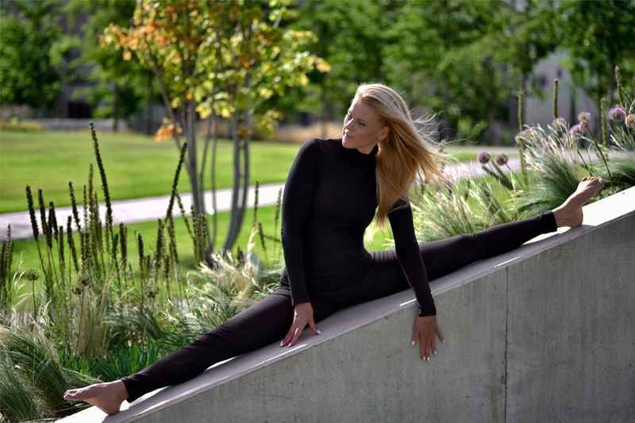
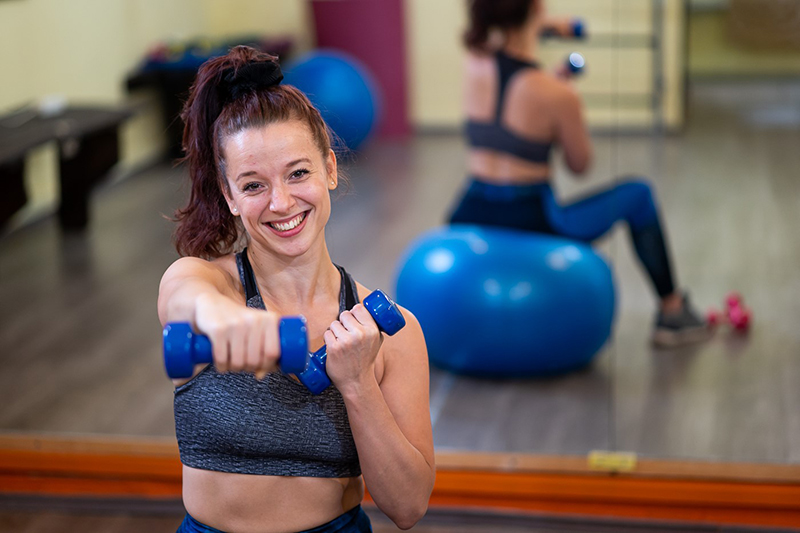

Dóri
“A jógával érettségi után ismerkedtem meg. Azelőtt sose gondoltam volna, hogy jógázni fogok, pláne nem tanítani. Teljesen véletlenül találtam rá egy Kino MacGregor astangabemutató videóra az interneten, mikor megoldást kerestem a korábbi aktív sportolásból megmaradt hátfájdalmaimra. Onnantól egyenes volt az út előttem. Astanga.
Nem voltam különösebben erős, hajlékony pedig egyáltalán nem. Mindezek ellenére kitartóan jártam gyakorolni. A mai napig nem tudom megmondani, hogy miért folytattam gyakorlást. Mikor elkezdtem jógázni, meg voltam róla győződve, hogy sosem fogok tanítani. Magam miatt csináltam az egészet. Aztán többször kérdezgették tőlem, hogy nem gondolkodtam-e még rajta, hogy tanítsak. Végül beiratkoztam egy kezdő Gerincjóga oktatóképzésre, hogy az alapoktól kezdjem a tanulást. Rengeteget tanultam a képzéseken, sokat adott hozzá főleg a saját gyakorlásomhoz.
Nem gondolom, hogy a jóga mindenkinek jó, de azt hiszem, hogy mindenkinek érdemes lenne kipróbálni, hátha ottmarad a matracon, mint ahogy velem történt.”

Móni
Japánban nőttem fel, kiskorom óta természetes részem a keleti filozófia és szemléletmód. S bár tisztában vagyok vele, hogy a jóga Indiában született, a bennem ébredő fogékonyság mégis innen ered – érdekes volt abban a világban felnőni majd „használni” azokat a szemlélet különbségeket a nyugati világban. Habár a jóga később csöppent bele az életembe mindig is nagy érdeklődéssel kérdezgettem róla azokat akiknek a mindennapi részük volt ez a filozófia és mozgásforma.
A jóga közel 10 éve talált rám, amikor is egyre több fájdalmam volt a gerincferdülésemből adódóan. Egy ismerősöm ajánlására ismerkedtem meg a Mandala Jógastúdiók Gerincjóga rendszerével. Nagyon rövid idő után éreztem jótékony hatását, így a legközelebb induló oktatóképzésükre azonnal jelentkeztem. Már akkor gondolkoztam azon, hogy egy nemzetközi alapképzést is elvégeznék.
A jóga számomra egy megfogalmazhatatlan egységet jelent. Egy olyan egység ami mint egy kör, bár be van záródva mégis mindig valami újat ad.
Elsődleges forrásaim akikből merítek itthon az Juhász Sarolta és Pápa Gyöngyvér. De bármelyik Mandalás oktató órájára ha elmegyek gyakorolni az nem csak fizikailag és szellemileg de szakmailag is feltölt. Külföldön pedig Tara Lee, Jane Austin, Sean Haleen, Jason Bowman és Harvey Deutch-tól tanultam a legtöbbet.
Határtalan szerencsésnek érzem, hogy nem csak az óráikon vehettem részt, de első kézből tanulhattam ezektől az emberektől az oktatóképzés alatt. ”

Sára
Ülő munkát végeztem és nagyon fájt a hátam, amikor szembe jött velem a Gerincjóga. Az első foglalkozás olyan felüdülést jelentett, amilyet még sosem tapasztaltam azelőtt. Azóta jógázom… J
Eleinte annak örültem, hogy jobban érzem magam a bőrömben, majd a fizikai tapasztalásokon túl el kezdtek érdekelni az energetikai történések. Belehelyezkedni egy ászanába és csak figyelni, hogyan indulnak be a finom áramlások vagy éppen önt el egy hatalamas nagy melegség. Mindezt nem csak ászanákban, hanem pranajama (légzőgyakorlatok) közben is megtapasztalni újabb élményeket jelentett. Érdekes figyelni a tudatállapotaim változását, pl. lecsendesíteni az elmém a gyakorlás végére. A megtapasztalások közben adódott a kérdés, hogy Ki is vagyok én valójában… így jutottam el az Advaita Védanta tanátasaihoz és Gangához. Az önvalóm felismerését ezen az “úton” keresem.
A gyakorlásaim sokféleképpen alakultak. Kezdetben gerincjógáztam, majd a hatha vette át a fő szerepet. Az indiai utam után astangáztam, ami nagyon gyors, komoly változást eredményezett. A gyermekvállalás előtt a nőijóga kapott nagyobb hangsúlyt, a várandósság alatt napi szinten kismama jógáztam. Most újra a nőijóga segít a szülés utáni regenerációban.
A jóga számomra egy rendkívül praktikus eszköz, folyamatos tapasztalást, tanulást, tudatosságot, felismerést, jóllétet és nyugalmat jelent. Mindenkori tudásomat örömmel osztom meg másokkal is.”